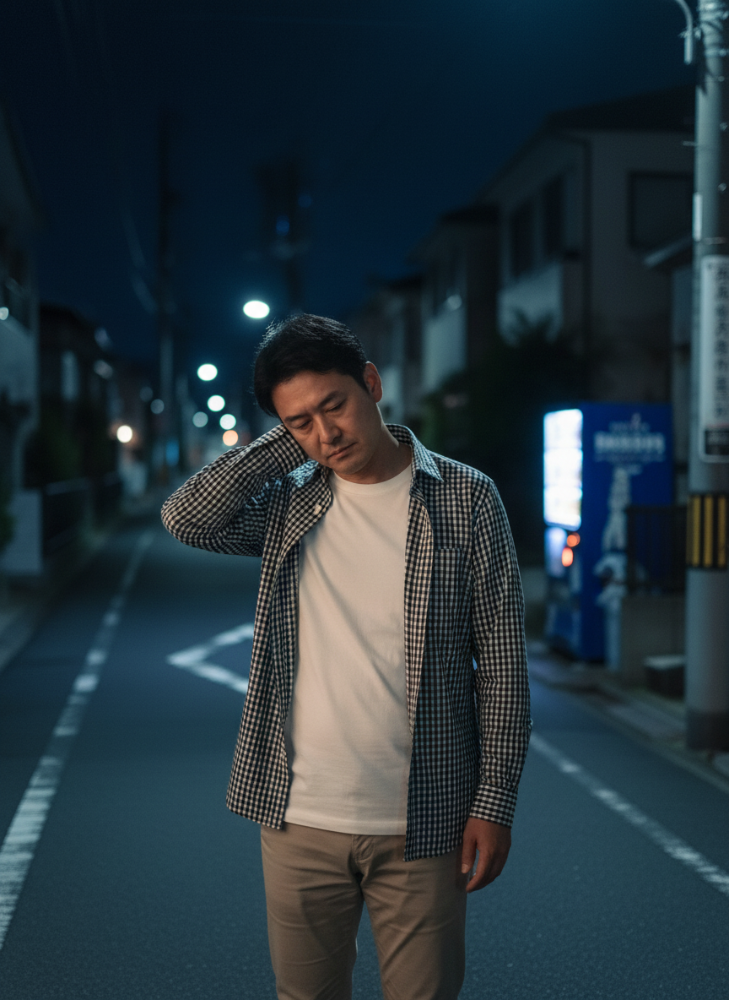
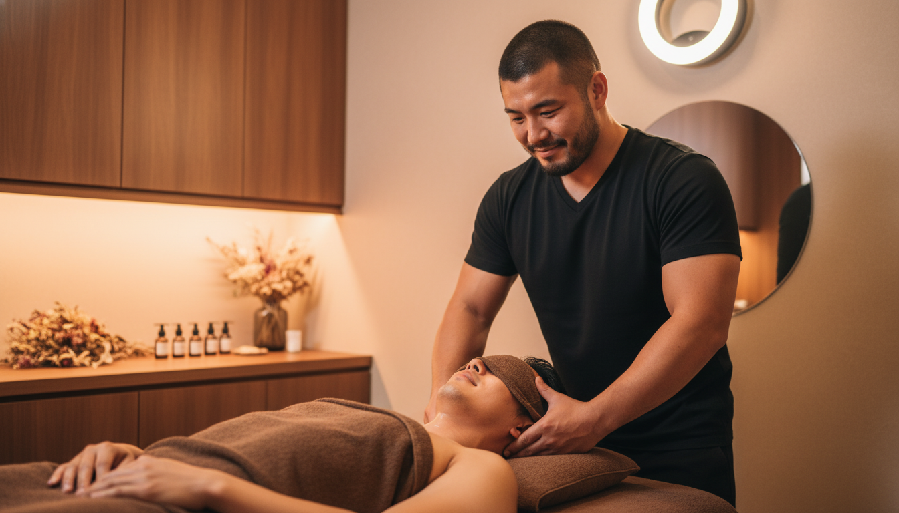
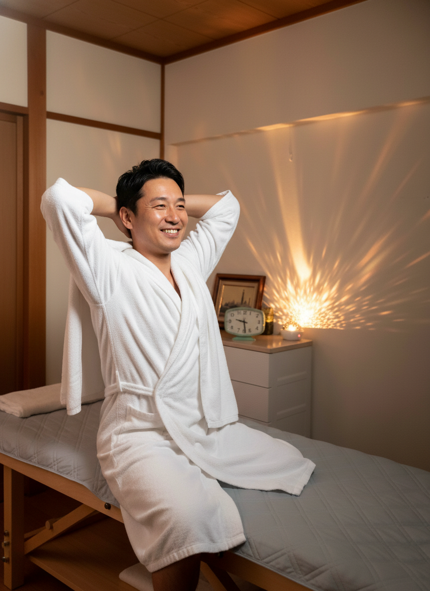
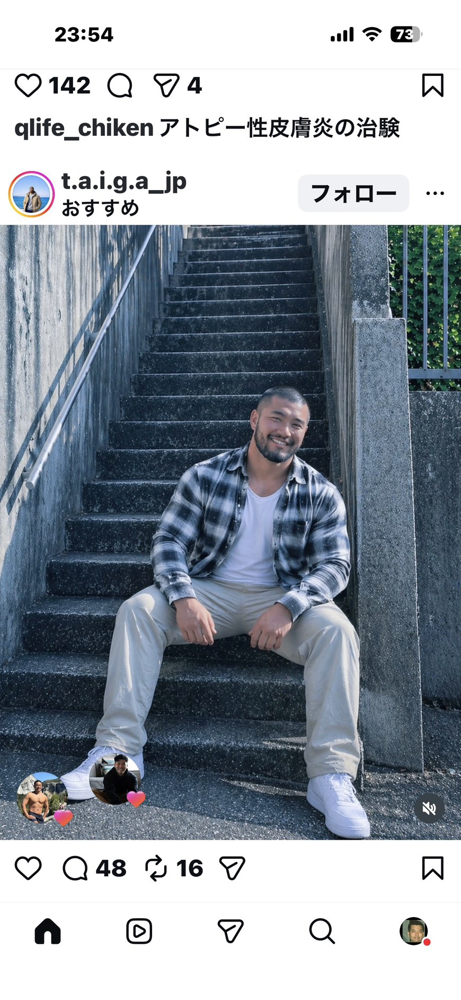
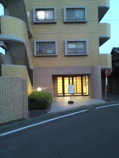
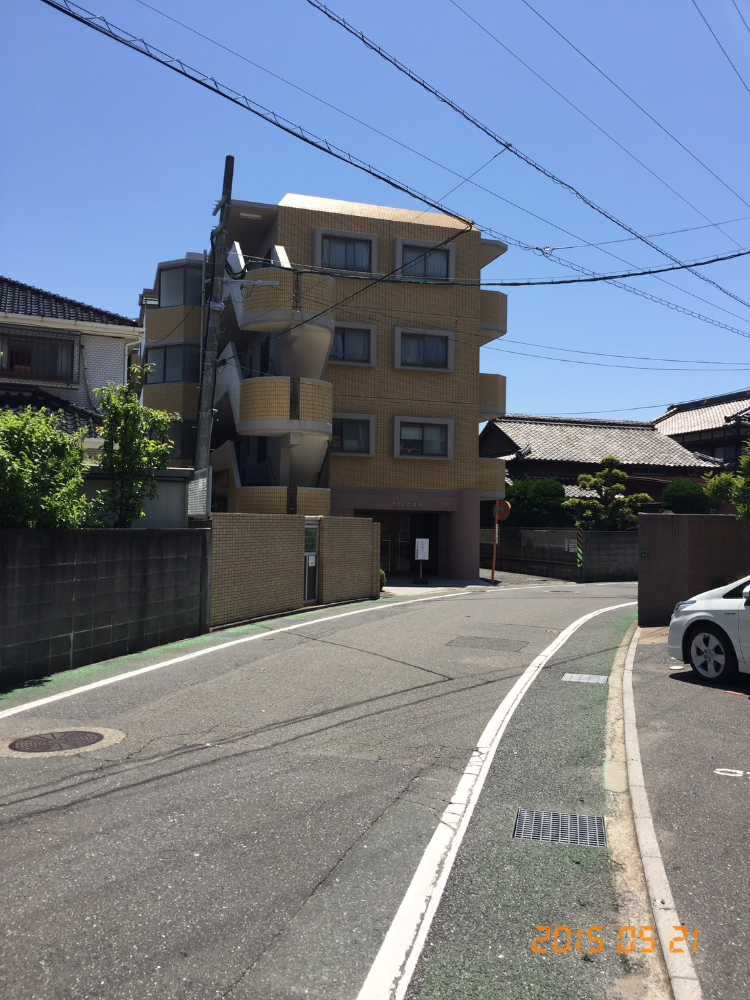
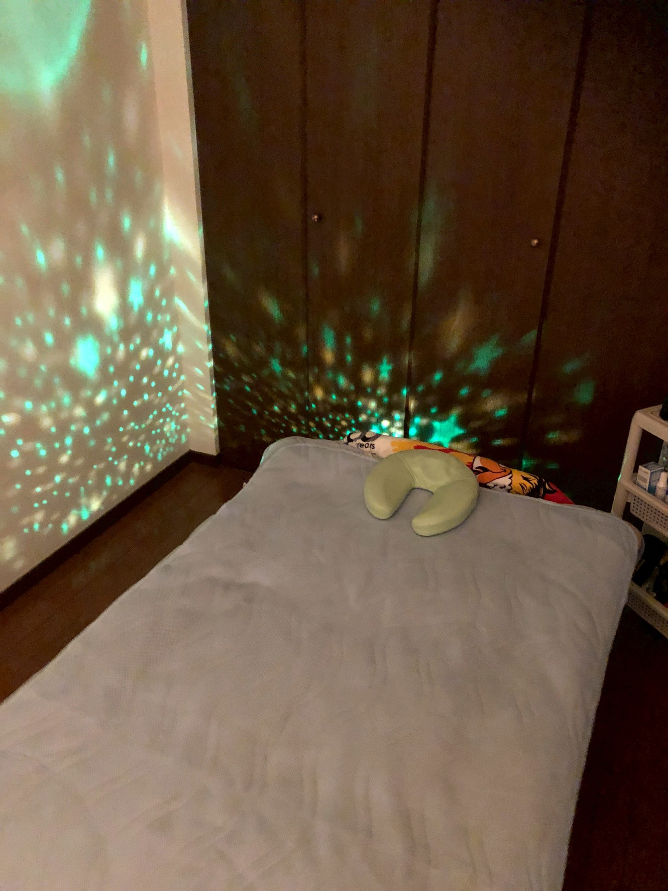
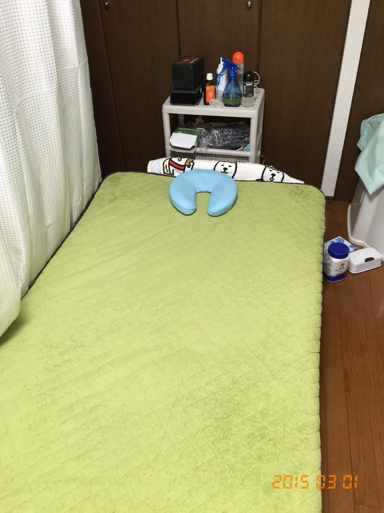
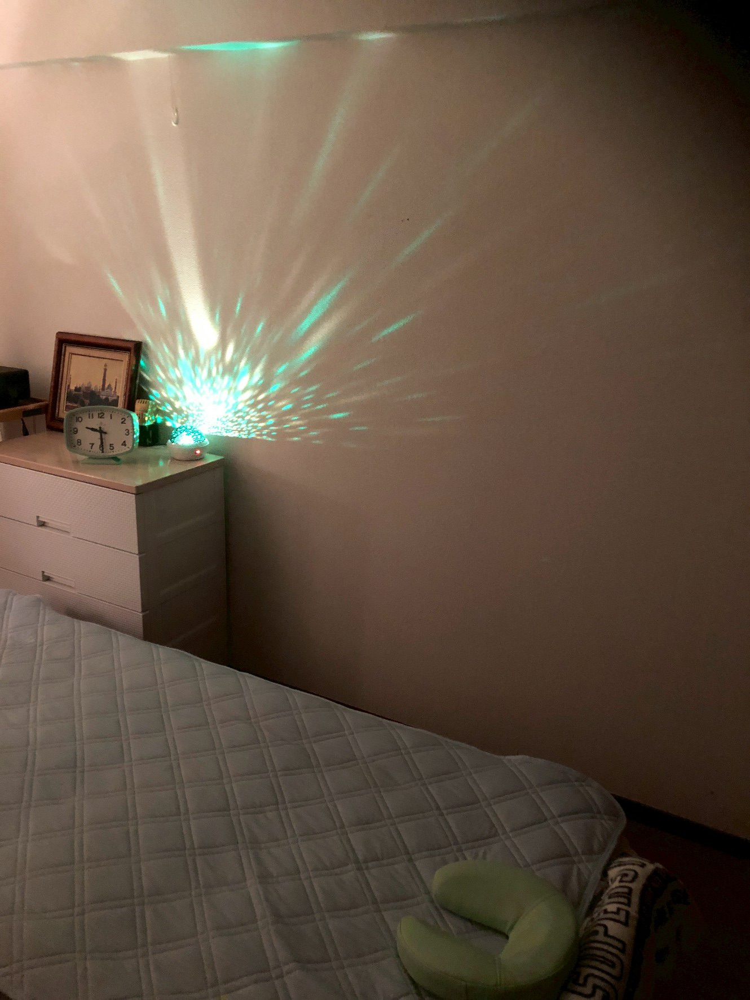

YouTube広告 構成案＋画像モックアップ v4
Lovers 様（活動名：南 健／担当：川上 恵以）
📌 エグゼクティブサマリ（鈴木さんレビュー用）
Lovers（福岡市西区・男性専用リラクゼーションサロン）のYouTube広告動画案。
仲野直紀「15秒広告マスターメソッド」に準拠し、5要素構成（理想→共感→解決→根拠→オファー）・冒頭2秒でWho×What明示・2-3秒カット割り・ベネフィット重視で設計。
参考動画はクライアント指定動画（oru – Lymphatic Therapist for Men）＋ゴールドスタンダード（Masotera Tokyo・29万再生）＋同業種2本。
シーン画像は Gemini 2.5 Flash Image で生成済み（30秒10カット）。クライアント受領済みの実物写真は届き次第ブレンドして再生成予定。
＋15秒短縮版
（Meta/TikTok派生）
セグメント配信
「男のための、本気の癒し。」
📐 進捗ステータス
- ✅ ヒアリング情報取得（録音文字起こし＋スプシ反映）
- ✅ 仲野15秒メソッド適用構成（5要素・Who×What・ベネフィット・シズル）
- ✅ 30秒10カット ＋ 15秒短縮版の設計
- ✅ シーン画像12枚生成（Gemini）
- ✅ 参考動画（クライアント指定＋ゴールドスタンダード＋同業種2本）
- ⏳ クライアント受領写真のブレンド → 実物に近い人物画像化（次フェーズ）
- ⏳ オファー内容の南様確定 → 価格／キャンペーン期間／枠数
- ⏳ 動画化（Seedance）＋編集（Premiere Pro）→ 納品
📋 案件基本情報（ヒアリングシート確定）
福岡＆博多。営業時間 9:00〜AM1:00（年中無休）
https://lovers4ux.weebly.com/
📝 強み・特徴（ヒアリングシート原文）
👤 お客様イメージ（ヒアリングシート原文）
- 普通体型でちょっとぷくっとお腹でてる男の人（40〜50代、スーツ）。ストレスで目が下を向いてる。電車の中で。
- 普通体型でちょっとぷくっとお腹でてる男の人（40〜50代、私服で白黒チェックシャツ系）。仕事終わってから疲れてる。
- お店でマッサージ受けて気持ちいい。明日の活力になります。
- 「男性同士だからこそ通じ合える感覚。当店独自の施術が最大の魅力です」
- サラリーマン仕事バリバリしてる／普段着の人も仕事終わったあとにスッキリ。
⚡ v4：15秒広告マスターメソッド適用
仲野直紀『15秒！集客革命』の5要素構成・冒頭2秒Who×What・2-3秒カット割り・ベネフィット重視・3心理オファーをLoversに適用しました。バズではなく「予約獲得」に直結する設計です。
冒頭2秒で Who × What を明示
スーツ／介護・医療職
リラクゼーションサロン
独自手技で敏感ポイントへ
5要素マッピング（30秒）
| # | 要素 | シーン | 秒数 |
|---|---|---|---|
| ① | 理想の姿（ベネフィット） | 施術後の活力ある男性＋スーツで颯爽 | 0–4s |
| ② | 悩みの共感 | 電車で疲れた男性／介護現場で肩を回す | 4–9s |
| ③ | 解決方法の提示 | Lovers店舗・施術者・施術風景 | 9–17s |
| ④ | 解決できる根拠 | 男性同士の信頼／独自手技／押し売りなし | 17–24s |
| ⑤ | オファー（3心理） | 今月限定／初回特別価格／予約CTA | 24–30s |
💰 オファー設計（3心理：緊急性・限定感・お得感）
・初回特典／割引価格（お得感）
・予約枠の制約（限定感）
仲野メソッド推奨：緊急性＋お得感の組み合わせが新規獲得フェーズに最も効果的
📐 ベネフィット × メリット書き分け
| メリット（NG・特徴の説明） | ベネフィット（OK・得られる未来） |
|---|---|
| 男性同士の施術 | 誰にも言えない疲労を、わかってもらえる |
| 独自の手技 | 翌朝の体の軽さが、違う |
| 60分コース | 明日からまた、自分の戦場に戻れる |
| 押し売りなし | 安心して、ただ癒される時間 |
→ ナレ・テロップは 必ずベネフィット側 を使う（仲野メソッド最重要ルール）
🎬 シズル感（五感に訴える瞬間）— v4で新規追加

⚡ 15秒短縮版（Meta／TikTok向け本命）
- ✅ Who／What／How が冒頭2秒で明示
- ✅ 5要素（理想→共感→解決→根拠→オファー）が順序通り入っている
- ✅ 2-3秒ごとに画角変更（30秒で10カット／15秒で6カット）
- ✅ メリットではなくベネフィットを語っている
- ✅ 緊急性（今月限定）＋お得感（¥4,980）の組み合わせ
- ✅ シズル感（オイル・肩の緩み・深呼吸）を各シーンに配置
- ✅ バズ狙いではなく予約獲得狙い（CPA重視）
📽 シーンつなぎ — 30秒・10カットの流れ
v4の5要素構成に沿って10カットを並べました。左から右へ・上から下へと流れていきます。前半=寒色（疲労）／中盤=暖色（解決・施術）／後半=黄金（オファー）の色温度遷移にも注目してください。
 S01
0-2s
S01
0-2s
 S02
2-4s
S02
2-4s
 S03
4-6s
S03
4-6s

S04 6-8s S05
8-10s
S05
8-10s

S06 10-13s S07
13-17s
S07
13-17s
 S08
17-20s
S08
17-20s

S09 20-22s
🎬 施術シーン カット候補集（編集時の差し込み素材）
単調にならないように、施術中のシーンを 3バリエーション 用意しました。実際の動画編集では2-3秒ごとにこれらを切り替えて見せ場を作ります（南様のYouTubeチャンネル参考動画と同じ手法）。

- 0-4s：結論先出し（After/ベネフィット）— 「これになれますよ」を最初に見せて自分事化
- 4-9s：共感（Before）— 自分の悩みと一致させて「これは自分のための広告」と認識させる
- 9-17s：解決＋シズル — Loversへの誘導とオイル滴の五感訴求
- 17-22s：USPキメ＋安心 — 男性同士／独自手技／押し売りなし
- 22-30s：オファー＋CTA — 緊急性＋お得感＋限定感の三段重ね
🏛 参考事例：男性専用リラクゼーションサロン
同業態の運営事例。共通している「暖色系の落ち着いた内装・男性セラピスト・プロフェッショナル訴求」を Lovers のクリエイティブにも踏襲します。
男性専用・男性セラピストによるタイ式オイルマッサージ。「男性同士だからこそ男の体を理解できる」を直接訴求。Loversのコンセプトに最も近い直接競合。
▼ 学べる点：男性同士訴求のコピーライティング、Webデザイン
https://masotera.jp/en/
完全個室リラクゼーションサロン。「大人の男性」をターゲットに上質さで打ち出している。日本語サイトでトンマナ・写真使い・メニュー構成が参考になる。
▼ 学べる点：上質感の演出、料金プラン設計、個室訴求
https://www.otonaspa-tokyo.com/
大阪の男性専用スパ。複数のマッサージコースを展開。Lovers配信エリア（大阪）の直接比較対象。
▼ 学べる点：関西エリアの男性専用スパの集客の打ち出し方
https://www.taiyospa.com/english/
- 内装トーン：暖色系の間接照明＋木目・自然素材（パステルNG、グレー基調＋暖色アクセント）
- セラピスト訴求：「日本人男性スタッフ」「プロフェッショナル」を明示
- 時間訴求：仕事終わり〜深夜の時間帯を意識した運営・配信タイミング
- 客層訴求：出張サラリーマン＋地元医療介護従事者の二層をカバー
🎥 参考動画（クリエイティブ方向性）
同業態のCM・動画スタイル参考。共通する「暖色系の落ち着いたトーン」「丁寧な手技の見せ方」「言葉少なめ・映像で語る」を Lovers にも踏襲します。
南様ご自身のチャンネルでまとめた施術参考動画集。現在1本：「眠れる身体に導きます💪 #リンパマッサージ #リラクゼーション #オイルマッサージ」（23秒ショート）。今後追加される動画もリアルタイムに参考にできます。
▼ 学べる点：南様自身の施術スタイル・カメラアングル・テンポ・ハッシュタグ戦略
https://www.youtube.com/playlist?list=PLhOb75_a9IWrDNW-7KFbV5pZ5CZvDta6n
南様が一番気に入った参考動画。60秒尺・29万再生という実績。男性専用×男性セラピストの直接競合動画。ナレーションなし、施術風景＋BGMで「気持ちよさ」を映像で語るスタイル。Loversが目指す最終形のリファレンス。
▼ 学べる点：60秒尺・ナレなし・施術風景主体・"Professional, non-sexual"を明示するブランドセーフティ設計
https://youtu.be/vpmNJdIjkUI
「気絶級」「脳が溶ける」など強い体感訴求のサムネコピー＋施術の音と映像で気持ちよさを語る構成。LoversのS05〜S06に通じる演出。
https://www.youtube.com/watch?v=4WNYPOSC_4U
男性専用エステ最大手の企業CM集。「男性向けに振り切ったブランディング」「シンプルなトーン」が学べる。
https://www.dandy-house.co.jp/cm/
🎙 台本（ナレーション全文）
（間）
静かに落ち着ける時間と、丁寧なマッサージ。
男性同士だからこそ、通じ合える感覚。
凝りやすいポイントを、じっくり時間をかけて。
総文字数：約75文字／想定読み時間：約18〜20秒
ナレーション方針：落ち着いた30〜40代男性の声（AI音声 / 声優、要ご選定）
BGM：前半=静かなピアノ／後半=温かいアコースティック
🤖 GPT Image 2（image2.0）用プロンプト集 — 全10シーン
image2.0 で再生成する用の英語プロンプト。各ブロックをコピペ＋指定の参考写真を添付して使用してください。--ar 16:9 は末尾に必ず付与済み。
image2.0 で生成する際、各シーンのプロンプトに合わせて以下の写真を 添付して使用 してください。プロンプト内の「the attached reference photo」がこれらに対応します。






⚠️ 共通プロハイビット句（全シーン末尾に付ける）
Prohibited: women in frame, female silhouettes, sexual/erotic poses, ecstatic expressions, full nudity, blood, weapons, Chinese/Korean characters, watermarks, text overlays, deformed hands or extra fingers. Body exposure limited to neck, shoulders, hands. All visible persons are Japanese men only.
S01｜0-2s｜施術後の活力ある男性（フック・ベネフィット先出し）— 客モデル写真添付
Create a cinematic 16:9 landscape of a Japanese man in his late 40s, soft features with a slight soft belly, resembling the attached reference photo, sitting on a wooden massage table edge after a relaxation session. He wears a clean white spa robe loosely over his shoulders. His posture is upright and energized, both hands resting confidently on his knees. His face shows clear relief and satisfaction: bright open eyes, a wide natural smile, slight head tilt back. Behind him, warm amber LED-projected star lights bloom softly on a wooden wall - the actual signature lighting of the salon. Lighting: warm amber spa illumination, soft directional key from upper right, gentle fill, no harsh shadows. Background: blurred wooden interior of a Japanese relaxation salon, soft bokeh. Mood: emotional payoff, the "ah, I feel reborn" moment, sanctuary, masculine warmth. Style: ultra-realistic, 8K, photorealistic, cinematic Japanese commercial aesthetic similar to Sapporo or Asahi premium ads, shot on 50mm lens with shallow depth of field. Prohibited: women, sexual poses, ecstatic expressions, full nudity, text, watermarks, Chinese characters, deformed hands. --ar 16:9
S02｜2-4s｜スーツで颯爽（After／復活）— 客モデル写真添付
Create a cinematic 16:9 photo of the same Japanese man (late 40s, soft belly, resembling attached reference) now wearing a dark gray business suit with a navy tie, walking confidently through a modern Japanese train station or airport terminal in early morning light. He carries a small black business bag in his right hand. His posture is upright, chin lifted slightly, determined and refreshed expression. Bright natural daylight streams through large glass windows behind him. Other passengers blurred in the background. Lighting: warm morning sunlight from the left, golden hour glow, bright and energetic. Background: out-of-focus glass-walled terminal corridor, slight motion blur on background figures. Mood: "tomorrow is a new day", confidence, post-massage vitality. Style: ultra-realistic, 8K, photorealistic, cinematic Japanese commercial style, 35mm lens, medium shutter speed for natural movement. Prohibited: women, deformed hands, watermarks, Chinese characters. --ar 16:9
S03｜4-6s｜電車内・疲労（共感）— 客モデル写真添付
Create a cinematic 16:9 photo of the same Japanese man (late 40s, soft features with a slight soft belly, resembling the attached reference) inside a packed evening Japanese commuter train. He wears a dark gray business suit and a navy tie, white shirt slightly wrinkled. He stands holding a hanging strap with his right hand, head bowed slightly, eyes cast downward and tired, shoulders slumped. Other Japanese male commuters are blurred around him. Lighting: cool blue-white fluorescent overhead, low saturation, cinematic blue-gray tone. Background: out-of-focus train carriage interior with reflections on the dark window glass. Mood: heavy fatigue, isolation in a crowd, the unspoken male exhaustion. Style: ultra-realistic, 8K, photorealistic, cinematic, like a Japanese drama still, shot on 50mm lens, shallow depth of field, slight grain. Prohibited: women in foreground focus, ecstatic expressions, watermarks, Chinese characters. --ar 16:9
S04｜6-8s｜仕事終わり・私服チェックシャツで疲れて帰る男性（共感）— 客モデル写真添付
Use the man and outfit in the attached reference photo as the EXACT subject and clothing. Generate a NEW cinematic 16:9 photo of this SAME Japanese man (late 40s, soft features, slight soft belly) wearing the SAME black and white checkered casual shirt (open) over a plain white inner t-shirt with beige chinos as shown in the reference. NEW SETTING: He is standing on a quiet Japanese residential street at night after finishing work, NOT sitting on stairs. He stands tiredly under a streetlight, head slightly bowed, right hand rubbing the back of his neck, shoulders slumped, looking completely exhausted from a long workday. Behind him: out-of-focus residential houses, a vending machine glow, distant streetlamps at night. Lighting: cool blue night with warm amber streetlamp accent on his face. Mood: "the long walk home after work, the silent fatigue". Composition: 3/4 body shot, subject centered. IMPORTANT: This is NOT a massage scene. NOT indoors. NOT on stairs. He is standing on a street at night, tired, in casual clothes. Style: ultra-realistic, 8K, photorealistic, cinematic Japanese drama style, 50mm lens, shallow depth of field. Prohibited: women, watermarks, Chinese characters. --ar 16:9
S05｜8-10s｜Lovers店舗外観（解決提示）— 店舗外観写真添付
Create a cinematic 16:9 photo of the exterior of a Japanese apartment building at evening, modeled on the attached reference (beige/tan-tiled facade, multi-story residential building). The entrance is illuminated with a warm amber glow spilling onto the sidewalk. A discreet signage panel near the door (no readable text). The atmosphere conveys "an upscale private sanctuary tucked into a quiet residential street". Empty narrow Japanese street in front, no people visible. Lighting: deep evening blue sky above, warm amber accent lighting at the entrance, dim residential street lamps in the distance. Background: surrounding low-rise Japanese houses softly out of focus. Mood: discrete, premium, "you found a hidden gem", masculine sanctuary. Style: ultra-realistic, 8K, photorealistic, cinematic with shallow depth of field, 35mm lens, anamorphic feel. Prohibited: people in frame, readable text on signage, watermarks, Chinese characters. --ar 16:9
S06｜10-13s｜暖色の部屋で施術中（実際の施術風景）— 南氏プールサイド写真添付
Generate a WIDE HORIZONTAL 16:9 LANDSCAPE photo. Use the FACE of the man in the attached reference photo (athletic Japanese man with short hair, slight beard) as the therapist. THERAPIST: late 30s, wearing a clean BLACK V-NECK T-SHIRT (NOT white uniform). He stands behind/beside a massage table in a warm wooden spa room, leaning slightly forward, using both hands to gently massage the upper shoulder/chest area of the client. Calm focused professional expression with slight smile. CLIENT: A male client lies face-up on the massage table, head on a soft pillow. A BROWN TOWEL covers his eyes/forehead like an eye mask. A brown towel wrap covers his lower body and chest. Only his neck, shoulders, and upper chest are visible. He is relaxed with slight peaceful smile. SETTING: Warm wooden cabinets in background with massage oil bottles, dried flower decorations, circular ring lamp on wall, premium private men's relaxation salon. LIGHTING: Warm amber spa illumination, soft directional key light. MOOD: Professional skilled massage, masculine warmth, NOT sexual NOT erotic. COMPOSITION: Medium wide shot showing therapist (upper body) and client (head/shoulders/upper chest). Style: ultra-realistic, 8K, photorealistic, cinematic Japanese men's spa Instagram style. Prohibited: women, sexual ecstasy, full nudity, watermarks, Chinese characters. --ar 16:9
S07｜13-17s｜施術中・客の表情（USPキメ）— 客モデル写真添付
Create a cinematic 16:9 close-up of the same Japanese man (late 40s, soft features, resembling the attached reference) lying face-up on a wooden massage table during an active treatment. His head rests comfortably on a soft pillow. A male therapist's hands (partially visible from above) gently work on his shoulders and neck. The client's face shows the EXACT moment of relief: eyebrows softening, eyes gently closed, a small unconscious smile forming at the corner of the mouth, the "ah, that's exactly the spot" expression. NOT sleeping, NOT ecstatic - dignified peaceful relief. Lighting: warm amber overhead spa light casting soft shadows that emphasize the relief on his face. Background: soft-focus wooden ceiling and walls. Mood: emotional payoff of skilled hands, masculine trust, "finally". Style: ultra-realistic, 8K, photorealistic, cinematic close-up, 85mm lens, very shallow depth of field. Prohibited: women, sexual ecstasy, full nudity, watermarks, Chinese characters. --ar 16:9
S08｜17-20s｜施術師の手元（USP独自手技）— 南氏プールサイド写真添付
Create a cinematic 16:9 close-up of a Japanese male therapist's strong, professional hands working on the shoulders and upper back of a male client lying face-down. The therapist's forearms and hands are clean, fingernails trimmed, hands resembling those of the man in the attached reference photo (athletic-build Japanese man). He applies firm thumb pressure to the trapezius muscle, deep tissue technique. Only hands, forearms, shoulders, and a clean white towel are visible. Lighting: warm amber spa lighting with strong directional shadows highlighting the muscle and pressure technique. Background: out-of-focus wooden massage room. Mood: skilled technique, "this is real professional work, not amateur", masculine strength applied with care. Style: ultra-realistic, 8K, photorealistic, macro detail, cinematic close-up, 90mm macro lens, dramatic side-lighting. Prohibited: women, ecstatic moans, sexual framing, full nudity, deformed fingers, watermarks, Chinese characters. --ar 16:9
S09｜20-22s｜施術後スッキリ（ベネフィット明示／安心訴求）— 客モデル写真＋サロン内装写真添付
Create a cinematic 16:9 photo of the same Japanese man (late 40s, soft features, slight soft belly, resembling the attached reference) sitting upright on the edge of a wooden massage table after a session, wearing a clean white spa robe. He stretches both arms behind his head with a wide natural smile, eyes bright and open, the "ah, my body feels so much lighter" moment. Behind him, a wooden wall is illuminated with warm amber LED-projected starlight patterns - the actual signature lighting of the salon. Lighting: warm amber spa illumination with the magical starlight projection behind him providing colorful accents. Background: warm wooden interior with the LED star projection blooming softly on the wall. Mood: pure satisfaction, "I'm so glad I came", masculine restoration. Style: ultra-realistic, 8K, photorealistic, cinematic Japanese commercial aesthetic, 50mm lens, shallow depth of field. Prohibited: women, sexual poses, ecstatic expressions, full nudity, watermarks, Chinese characters. --ar 16:9
S10｜22-30s｜CTA統合版 顔＋店舗＋QR＋予約導線（こもれびスタイル）— 南氏プールサイド写真添付
Generate a WIDE HORIZONTAL 16:9 LANDSCAPE CTA image for a men's relaxation salon, combining therapist portrait + store info + LINE QR + booking guide in one frame. LEFT HALF (45%): A warm portrait of the male therapist resembling the attached reference photo (athletic Japanese man with short hair, slight beard, friendly smile), wearing a clean black v-neck T-shirt, standing in a warm-lit wooden massage room, smiling welcomingly at the camera. Warm amber lighting on him. RIGHT HALF (55%): Clean info panel area with deep amber/wood gradient background (#2a1820 to #1a1018). Top: elegant serif logotype "Lovers" in soft pink-cream. Below: small gold uppercase text "男性専用リラクゼーション". Middle: A clean square white LINE QR code placeholder (medium size) PLUS adjacent text "📱 ご予約はこちら ▶" in bold magenta-pink, with "LINE: @minami2424" and "TEL: 080-3950-3324" below in soft pink. Bottom (separated by subtle gold line): two lines of small soft-pink text "📍 福岡市西区下山門1-7-62 アメックス姪浜307" / "🕐 9:00 - AM 1:00 年中無休". Style: ultra-clean, premium, masculine, dignified, like a high-end Japanese luxury spa closing frame with all key info consolidated. Prohibited: women, busy decorative elements, neon, low-contrast text, Chinese characters. --ar 16:9
⚠️ トラブルシューティング（顔が違う／女性混入／文字化け 等）
| 症状 | 対処 |
|---|---|
| 顔が参考と全然違う | プロンプト先頭に「Use the face from the attached reference photo EXACTLY」を追加 |
| 女性が混入 | Prohibited に「all visible silhouettes are male」を追加 |
| 過激な表情になる | 「Prohibited: ecstatic, sensual」を強調 |
| 文字化け（中国語等） | 「No Chinese, Korean, or any non-Japanese characters」を追加 |
| 横長で出てしまう | --ar 16:9 を末尾に確実に付ける |
📋 次のアクション
🔵 ランバード側で進めること
- クライアント受領済みの人物写真（イメージ写真＋出演男性写真）をブレンドして主役キャラを再生成
- 選定したフックでSeedance動画化 → Premiere Pro編集 → 納品
- 15秒短縮版の並走制作
🟡 南様にご確認いただきたいこと
- CTA導線：LINE予約／電話／HPフォーム、メインはどちらに？
- オファー内容：キャンペーン期間／割引／予約枠数の有無（なければ「完全予約制」「押し売りなし」「事前カウンセリング」で代替）
- ナレーション：AI音声 / 声優 / 南様本人 のいずれを選ぶか
- 本名の読み：川上「恵以」の読み方（けいい？／その他？）
- 15秒短縮版も並走で作るか